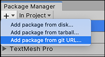
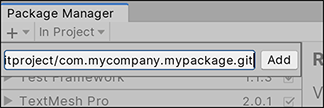
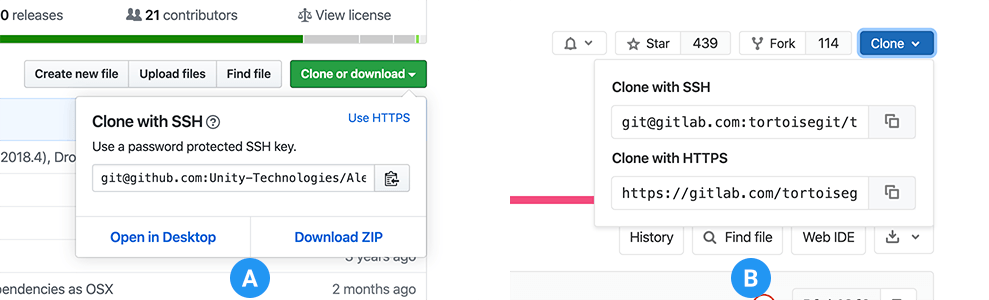

The Package Manager can load a package from a Git repository on a remote server.
For more information about using Git URLs with the Unity Package Manager, see the documentation on using Git URLs in your Project manifest.
To load a package from a Git URL:
Click the add button in the status bar.
The options for adding packages appear.

Add package from git URL button
Select Add package from git URL from the add menu. A text box and an Add button appear.
Enter a valid Git URL in the text box and click Add.

For more information about what protocols Unity supports, see Git URLs.
If Unity was able to install the package successfully, the package now appears in the package list with the git tag.
If Unity was not able to install the package, the Unity Console displays an error message. For more information, see if you can find the message in the list of Error messages below.
If you specify a location that does not exist, a message similar to this one appears in the Unity Console:
Cannot perform upm operation: Unable to add package [https://mycompany.github.com/gitproject/com.mycompany.mypackage.git]:
Error when executing git command. fatal: repository 'https://mycompany.github.com/gitproject/com.mycompany.mypackage.git/' not found
[NotFound]
UnityEditor.EditorApplication:Internal_CallUpdateFunctions() (at /Users/builduser/buildslave/unity/build/Editor/Mono/EditorApplication.cs:310)
Check your spelling. To make sure you are using the correct URL, go to the repository’s page and copy the URL from the Clone button:

Where to copy the URL on GitHub (A) and GitLab (B)
Click the button to the right of the URL on GitHub (A) or GitLab (B) to copy the URL to your clipboard.
Could not read Username: terminal prompts disabled
If you are trying to install a package from a private repository that requires authentication, a message similar to this one appears in the Unity Console:
Cannot perform upm operation: Unable to add package [https://mycompany.github.com/gitproject/com.mycompany.mypackage.git]:
Error when executing git command. fatal: could not read Username for 'https://mycompany.github.com': terminal prompts disabled
[NotFound]
UnityEditor.EditorApplication:Internal_CallUpdateFunctions() (at /Users/builduser/buildslave/unity/build/Editor/Mono/EditorApplication.cs:310)
The two most common protocols for authentication while cloning or fetching Git repositories are HTTP(S) and SSH (that is, a pair of public and private SSH keys):
With HTTP(S), every time you log onto GitHub or GitLab you need to enter your username and password in a terminal or a dialog box.
With SSH, you can add your public SSH key to GitHub or GitLab and then access repositories without having to enter a username and password.
However, if you have set up a passphrase to keep your SSH key safe, you still have to enter that passphrase in a terminal or a dialog box in order to authorize your key.
The Package Manager does not provide an interactive terminal or dialog where you can enter your username and password for HTTP, or your passphrase to unlock your SSH key. To bypass this, use one of these workarounds:
Use git-credentials from a terminal or command prompt. Then launch the Hub from the same terminal so that Unity has access to the cached or stored credentials.
Use ssh-agent running in the background from a terminal or command prompt, and provide the process ID to GitHub or GitLab.
 button in the status bar.
button in the status bar.